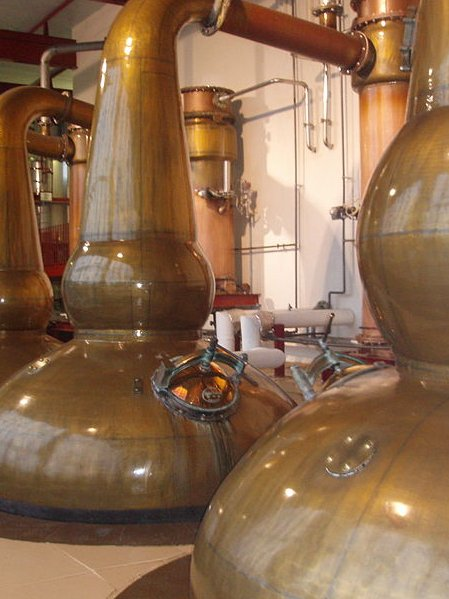
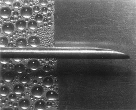

In previous lectures, we covered
conductive,
radiative,
natural
and
forced convective
heat
transfer.
There are just two remaining classes of heat transfer
process,
boiling
and
condensation.
These two processes are not distinct classes of heat
transfer on their own, but are a combination of the conductive,
radiative and convective heat transfer.
Condensation occurs in many unit-processes.
When steam is used to heat a vessel, the steam is
almost always at its saturation temperature (the
latent
heat
of the steam carries the energy).
Here, steam will condense on the vessel surface and
flow down in a film
to be collected at the base.

Condensing of process streams typically takes place
within condensing heat exchangers, often with a shell-and-tube
configuration.
You can see the vertical shell and tube exchangers on
the wall.
As with convective heat transfer, a
condensate
film
will form on the cool surface and
heat transfer
will be dominated by the heat transfer in the film layer
!
We will need to find a
condensation-film heat
transfer coefficient
!
Nusselt
was the first to analyse condensation on
a surface.
First, he noted that when vapour condenses on a
surface, it tends to do so evenly and forms a
film.
Then Nusselt noted that if the vapour (steam) is at
its saturation temperature,
it cannot cool without
changing phase.
The surface of the film must be at the bulk
temperature, $T_\infty$.
As the vapour must be at one temperature, the
condensing heat transfer resistance is solely due to the
conduction of heat through the liquid film.
This is a critical piece of information.
In condensation, the thickness of the liquid layer is
inversely
proportional to the efficiency of the rate of
condensation.
In situations where condensation is done using a
horizontal tube bundle in a shell and tube exchanger,
condensing liquid from higher tubes falls onto lower tubes
(see left).
This makes the lower tubes more inefficient at
condensing vapour and instead the energy is used to
sub-cool the condensate.
Nusselt managed to derive equations for the heat
transfer in a condensing film by combining heat and momentum
balances.
The amount of heat transferred through the liquid layer of
thickness $s(x)$
over the positions
$x$
to
$x+{\rm d}x$
is
\begin{align*}
Q(x) = \frac{k }{s(x)}{\rm d}x Z\left(T_\infty-T_w\right)
\end{align*}
Ignoring the effects of flow, sub-cooling and assuming
constant heat capacity, any heat transferred causes vapour to
condense, so dividing by the latent heat will yield the rate of
vapour condensation
\begin{align*}
{\rm d}\dot{M} &= \frac{Q(x)}{h_{g\to l}} &
\frac{{\rm d}\dot{M}}{{\rm d}x}&=\frac{Q(x)}{{\rm d}x h_{g\to l}} = \frac{k }{s(x) h_{g\to l}} Z\left(T_\infty-T_w\right)\\
\end{align*}
Any vapour which condenses into the film, must flow away
in the film.
We know from the previous lectures, the mass flow rate in
a laminar film (ignoring effects of heat transfer) is given by
\begin{align*}
\dot{M}=\rho \dot{V}_x(x)= \frac{\rho^2 g_x s^3(x) Z}{3 \mu}
\end{align*}
The rate of change of this mass flow-rate in $x$
is equal
to the rate at which vapour is condensed
\begin{align*}
\frac{{\rm d}\dot{M}}{{\rm d} x}=\frac{{\rm d}s}{{\rm d} x}\frac{{\rm d}}{{\rm d}s}\left[\rho \dot{V}_x\right]= \frac{{\rm d}s}{{\rm d} x}\frac{\rho^2 g_x s^2 Z}{\mu}
\end{align*}
Setting these two expressions for $\frac{{\rm d}\dot{M}}{{\rm d} x}$
to be equal to each other gives:
\begin{align*}
\frac{{\rm d}s}{{\rm d} x}\frac{\rho^2 g_x s^2 Z}{\mu}
= \frac{k }{s h_{g\to l}} Z\left(T_\infty-T_w\right)
\end{align*}
We can integrate both sides by ${\rm d}x$
and use the
boundary condition that
$s=0$
at
$x=0$
to get the layer thickness
as a function of position
\begin{align*}
s(x) = \left(\frac{4 \mu k x\left(T_\infty-T_w\right)}{g_x h_{g\to l} \rho^2}\right)^{1/4}
\end{align*}
We can put back the expression for $s(x)$
into the
expression for the heat transfer at a point
$x$.
\begin{align*}
Q(x) &= \frac{k}{s(x)}{\rm d}x Z\left(T_\infty-T_w\right) \\
&= \left(\frac{k^3 g_x h_{g\to l} \rho^2}{4 \mu x
\left(T_\infty - T_w\right)}\right)^{1/4} {\rm d}x Z\left(T_\infty-T_w\right)\\
h_{condensation}(x) &= \left(\frac{k^3 g_x h_{g\to
l} \rho^2}{4 \mu x \left(T_\infty -
T_w\right)}\right)^{1/4}
\end{align*}
where we define the condensation film transfer coefficient
at
a point
$x$.
We have managed to calculate an expression for the
condensation film transfer coefficient, without too many awkward
assumptions!
To find the overall heat transfer coefficient we just
integrate over the whole of the plate and divide by the plate
length to obtain the average value.
\begin{align*}
\bar{h}_{condensation}&=0.943\left(\frac{k^3 g_x h_{g\to l} \rho^2}{X \mu\left(T_\infty-T_w\right)}\right)^{1/4}
\end{align*}
All physical properties in the above expression should be
evaluated at the film temperature
$T_f=\left(T_w+T_\infty\right)/2$.
Nusselt developed several different equations for the
condensation film coefficient for horizontal or vertical, pipes or
plates.
Condensation film transfer coefficients are a great
example of the success of combined momentum and heat balances.
The Nusselt approach provides excellent theoretical
estimates of the heat transfer coefficient.
For condensation around the outside of horizontal pipes,
the estimates given by the following equation from Nusselt are
within 15% (estimates are worse for vertical tubes).
\begin{align*}
h = 0.72
\left(\frac{k^3 \rho^2 g_x h_{g\to l}}{D \mu \left(T_w-T_\infty\right)}\right)^{1/4}
\end{align*}
The theoretical estimates are usually low, so they even
provide a good worst-case estimate for the condenser performance.
The effect of the vapour velocity is mainly
characterised by how it affects the film flow.
If the vapour velocity is in the direction of flow,
the film thickness is reduced and the heat transfer rate
increases (up to 2–$3\times$
).
If the vapour velocity is against the flow, we can get
liquid hold-up, increasing the film thickness.
This is especially significant for condensation inside
a vertical tube with upward flow, where there is a danger of
flooding.
It is difficult to obtain turbulence inside the film
layer unless the layer is quite thick.
However, if the layer is thick, then turbulence will
add convective heat transfer on top of the conductive heat
transfer, and the transfer coefficient will increase.

Gold plated copper (left) and polished copper
(right), undergoing condensation.
There are actually two forms of condensation that can
occur in a process.
Film condensation (right side of image) is the most
common industrial condensation process.
It is easy to design as we have excellent predictions
for the transport coefficients, and the behaviour is very
predictable.
Gold plated copper (left) and polished copper
(right), undergoing condensation.
The alternative condensation mechanism is
drop-wise
condensation.
Here, the condensate fluid has a high
contact
angle
with the condenser surface and large drops form.
The flow only begins once the drops reach a critical
size, when a “avalanche” of drops occurs and the process
restarts.
Gold plated copper (left) and polished copper
(right), undergoing condensation.
The disadvantage of drop-wise condensation is that
behaviour fluctuates due to the droplet “avalanches” and
behaviour is hard to predict.
The coatings used to promote drop-wise condensation
become ineffective over time, and the process returns to film
condensation.
However, due to the reduced film thickness in parts
the drop-wise film coefficient can be
10
to
100
times larger than the film coefficient!
Learning objectives
We have learnt that
condensation processes are also
controlled by film heat transfer.
The conduction of heat through the condensate film
is
the source of the condensing heat transfer coefficient.
The condensate film thickness is a key parameter in the
condenser design.
Drop-wise condensation is an alternative mechanism for
condensation with the potential for almost 2 orders of magnitude
higher heat transfer rates.
But this is offset by short life times, uncertainty in the
design, and fluctuations in operation.